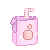

hi everyone. i haven't thought about this site in a bit because i love to hyperfocus on it and then completely drop it later. i still kind of like this theme (besides the resource page (ew) ) so i think i can keep working on this site this summer. college has been kicking my ass. i've been through a bunch of different medications (please somebody sedate me ). but im passing my classes i have an internship with the liberal arts school which is so LOL but this economy is so terrible for STEM i should have just done what I wanted instead of what i was good at. at least everyone needs a statistician. i had an interest in AI, but i didn't like the culture around it. being a #womaninengineering is seriously radicalizing these days most boys in my classes are so tech-bro pilled that it genuinely makes me more gay than i already was. i don't know how any women find this kind of thing attractive. anyway i want to work on this again. definitely uphauling the resource tab (again). in real life i'm kind of a hoarder too i've realized. maybe i can make a page for all my THINGS. i have so many things. i got really into drawing again via a relit gravity falls hyperfixation (iykyk) (i loved gf as a kid so i'm allowed to yaoify it now) and so now i'm kind of serious about drawing again. I really hate coloring though, so i just try to get better at anatomy and linework and stuff like that....idk it's just something i do to relax now. that hyperfixation is pretty burnt out but i still like drawing. i have some ocs, i guess i could make pages for them too. bye bye soup
the last 48 hours, i've been working on this site a lot. in part, i was snooping around for my resource page and i realize that everyone's website is so damn cool and mine is so damn boring. part of it has to do with my committment issues towards my website, i can never just stick to "one" generic aesthetic. well anyway, now i've decorated my index, about, and journal to one cohesive, bland, beige and green theme. at least it's better than a white background. this one is short. when i'm not on vscode i'm packing for school. when i'm not doing either of those i'm reading imageboards. my life is pretty lame right now. i've been watching the DNC but after two days of speeches i'm skipping today to hang out with my gf instead. it exists whether i acknowledge it or not.
hey! it's been a couple weeks, but at least i haven't given up on this yet. right now, i'm recovering from my wisdom tooth removal i mentioned last entry. it was last wednesday (today is tuesday, so 6 days ago), so i'm past the initial open-wound healing stage and starting to get into the long term. my stitches have dissolved, and one of my bottom holes have closed while the other is almost there. i did get all four teeth removed, but i can't see the upper teeth in the mirror at all, so i have to gauge my progress with my lower ones. i'm just hoping my upper teeth are following suit. i move for school on friday, which is pretty cool. i haven't really started packing yet so i definitely have to today after i catch some zzzs. one of those things on my list is picking up a good supply from the dispensary for school. just for convenience, no other reason... speaking of weed: i haven't smoked in over two weeks. i have to confess: i did break my tbreak with a gummy a few days ago, but it only had 2mg thc with a much larger cbd portion (what i was actually taking it for), and did basically nothing. if i was really going for sobriety, i wouldn't excuse it. but really, it just reminded me that my cannabinoid receptors are still so shot. i'm so envious of people that can take a gummy that small and be completely knocked out. i downloaded a pixel art set for my procreate, so i kind of want to experiment with pixel art. truth is, i've made pixel art before when i was younger, maybe 12-13. i posted them to deviantart (lol). here's some examples: (you can hover for full size)

i mean, not bad for a middle schooler. but that was on a completely different program, and its been so long i have to relearn it. btw, i advise you NOT to use these pixels, just because they're embarrassing. also, i think someone paid me like ten cents in deviantart points for that last one, as i don't recognize the character. but yeah, when i get a grip on pixel art now, i may start a gallery here :) speaking of galleries, i definitely want to restart a resource hub like xyz! fonts, pixels, sites, etc...i love to collect. i just hope school doesn't beat my aaaasss. i need to work on an internship for next summer (or the one after that, because recruiters don't like sophomores), which is a lot more work than just "get a job." it's hard to write a resume when you've done nothing in your life. and what projects to i have to show for it? soupy? i'm not showing people my "old interwebz" dumb ass website where i talk about my majorly weed-related problems. and interview/job pantsuits cost like four hundred dollars what ever dog. it's hopeless out here, but i have to try. being sixteen really sucked but its times like this that i would sacrifice going through eternal puberty to just be sixteen forever. well, that's today's journal entry. i'm sure nobody reads these and that brings me joy. if you do, i hope i'm not your personal lolcow. much love, -soup
hi, me again. a lot of things to write here: currently, i'm working on a what's-in-my-bag and a separate weed page. both of these things need a lot of assets for my vision which feel hard to find. i'm just trying to find some pixel notepad or something for a log about all the amazing wonderful weed i've smoked, but idk, maybe i'll have to make it myself loooooool. look, i draw for fun, and i love art and music and all of that, but i'm not a good artist. idky, there is just something within me that makes it pretty impossible to be creative. i've been drawing a long time, maybe a decade now, but i dropped it for a while. then i got an ipad and procreate and procreate is fine but let's not kid ourselves it could be better. but i know it's a skill issue. speaking of weed, i'm throwing myself into a break because i have wisdom tooth surgery in about a week and a half. everyone is like "stop smoking weed before surgery!!!" so here i am. and that's stressing me out a little...obviously detoxing from weed isn't like an actual opioid withdrawl that has me shitting and puking at the same time (real thing that happens!) but it's stressful, emotionally. not to mention i'm pretty scared of the wisdom tooth removal in its own way. i don't like thinking about the iv they're going to stick in me... but at least after then i never have to think about them again and soon enough i can start partaking in some gardening again. i've actually been sticking to only flower instead of carts and that alone has been doing a lot of good for me, mentally. even medically licensed thc carts are just so accessible that the constant weed-fog is hard to resist, but smoking out of a bong in a way that won't leave a smell takes a lot more effort for just one hit. because of this, my tolerance has plummeted a lot which makes me very happy because i do not have the money to keep up a cart addiction. today i: sorted out some clothes to sell, washed two loads of said clothes, created a cheat sheet for my math final, applied for a job (wow!) and now i'm writing here. it's 3pm now and i've been running around the house since like 8am, but in list form i guess i actually haven't done a lot. i suppose with my adhd even doing something is enough to impress myself. college starts 3 weeks from today which is awesome i actually can't wait to go back. this year i have a single dorm so i can really be a slob and no one will even know. but yeah, that wisdom tooth recovery time makes me anxious, hopefully i'll be back on my feet by moving time. it's just...august is always stressful. so maybe not the greatest time to reboot my site, but is it ever? i feel like no matter what i always end up forgetting about this place even if the files sit on my desktop and i have bookmarks on my browser. adhd really is impossible to work with. anyway, expect more from this site soon, since i still have ideas. website is cancelled. i need some time to relax and bounce on dick. i'll release new pages when i feel like it ..... -soup
hi! this is my journal, restarted for the third time. woohoo! will i write here? probably not. is it more about javascript programming than the actual function? yeah a lil lol. i feel like i'm breaking some sort of unspoken rule by putting javascript on my page, but it's not serverside, y'know? i'm not holding any cookies or anything, it's just for display purposes. you can believe me, or you can find my repo for this website and look for yourself! but the only way to win in life is to not hardcode things :P i tried something else earlier involving loading the buttons on my about page, but anything efficent is serverside which makes me sad. github pages doesn't allow php! :o so perhaps i'll have to find a better server host if i want to do better organization. or i can be lazy, and stick to hardcoding. recently ive been SUPER into tables. well if you know anything about my programming, i love little containers in the center of the page. idk, they're just so cute. anyway, with tables, its super easy to keep things centered and laid out properly >_< i wish i had known about them when coding for tumblr, it would've made my life so much easier...& yes all of the current pages are based on a table. ummmm well idk what else to talk about right now! i want to make a post about xyz crd because i didn't even know it was still around but everywhere i look i go LOL there it is....but for now: the tl;dr about xyz is that i was 16 and ref was 14 when we made that carrd lol. i can do much better now. but yeah i want to make a full post about that. ATM, im feeling pretty alright. gf and i r listening to music while he plays sims 4 and i'm working away in my burst of creativity on this site, actively ignoring the math final i have to take next week (OOPS) toodles, glad y'all like the site. see everyone next time :3 -soup
|